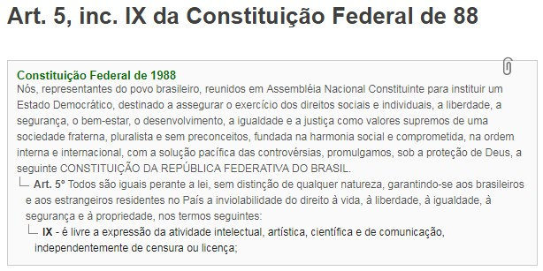

A verdade é que essa porra não existe de verdade, "liberdade" significa, segundo o dicionário, "Nível de independência absoluto e legal de um indivíduo, de uma cultura, povo ou nação, sendo nomeado como modelo (padrão ideal)". Levando em conta que o individualismo é a ética correta podemos interpretar liberdade como sendo: Fazer tudo que lhe vier a cabeça, contanto que isso não viole a liberdade alheia, ou seja, sua propriedade privada. Agora vamos fazer uma breve pesquisa para ver a verdade sobre a tal "Liberdade de expressão garantida pela constituição".
(fonte: https://www.jusbrasil.com.br/topicos/10730738/inciso-ix-do-artigo-5-da-constituicao-federal-de-1988)
Agora, meus queridos amigos, vamos dar uma olhada em outra lei:
No parágrafo 1º do artigo 20, há previsto o referido "Crime de Divulgação do Nazismo": "§1º - Fabricar, comercializar, distribuir ou veicular, símbolos, emblemas, ornamentos, distintivos ou propaganda que utilizem a cruz suástica ou gamada, para fins de divulgação do nazismo. Pena - reclusão de dois a cinco anos e multa".
Ofensas não machucam de verdade, tanto é que você SE ofende, são apenas palavras que VOCÊ achou ruins, mas isso é totalmente subjetivo, logo, eu falar: Preto macaco, não é um crime objetivo, expressar opiniões não é crime, a constituição se contradiz
Completamente errado, ainda existem alguns argumentos sobre se o nazismo realmente é sobre MATAR judeus ou apenas tira-los da Alemanha, mas levando em conta que é sobre matar, seu argumento continua errado visto que, novamente, o ato de falar não mata ou fere diretamente a propriedade privada alheia, a não ser que configure uma ameaça, enquanto não a configurar não é anti-ética e, portanto, não deveria ser considerada crime